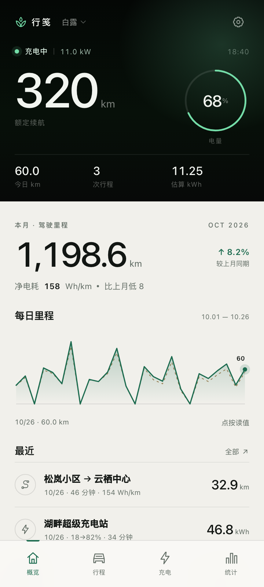
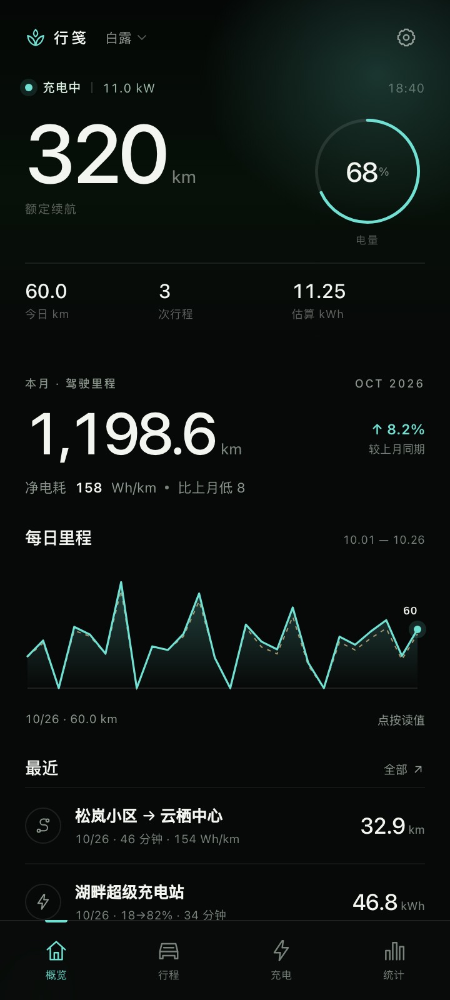
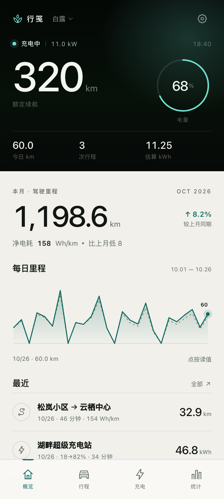
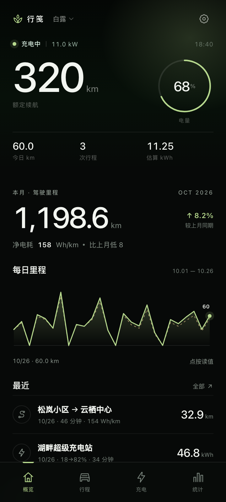
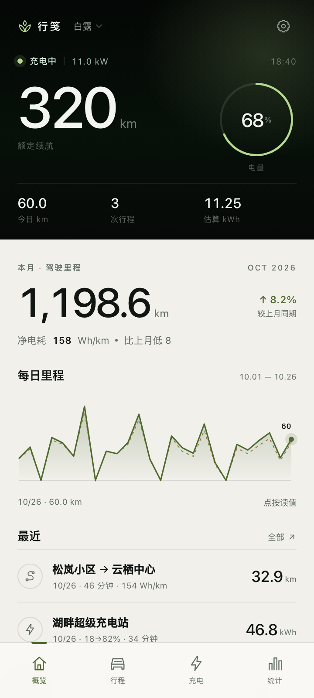

同一套 A 版面，三组强调色。
Mileaf / A · Night Run / Palette study只换强调色与 hero 光晕；背景、排版、图表语法不变。上：深色；下：浅色。
P1 · 玉绿推荐 · 冷静、有生长感
#74DDA8#1C6B4F


P2 · 青绿更冷、更科技
#6FE0D2#0F6B63


P3 · 苔绿更暖、更户外
#B7D98E#4F6B2F


P1 与参照砂色区分最清楚；P2 最锐利但偏青，容易和状态色混淆；P3 与参照砂色过近，比较线和主系列会打架。三者都未改变语义色（费用/参照）与背景层。